CS-3002 INFORMATION SECURITY · TECHNICAL REPORT
A multi-tenant key management service and an untrusted object store, built to the model used by production cloud KMSs: Root KEK → customer managed key → per-object data key.
Stratus Cloud demonstrates envelope encryption: data is encrypted with a short-lived data encryption key (DEK), and the DEK is protected by a key that never leaves a key management service. We built two independently deployed services and a browser client:
| Requirement | Implementation |
|---|---|
| Key hierarchy: Root KEK → CMK → DEK | Root KEK seals versioned CMK material (AES-KW, RFC 3394); CMKs wrap per-object DEKs (AES-KW or RSA-2048-OAEP). |
| Rotation | On-demand CMK versions; old versions decrypt only; ReEncrypt re-wraps DEKs inside the KMS without touching ciphertext. |
| Revocation | Per-user access removal, reversible disable, scheduled deletion that destroys key material (crypto-shredding). |
| Secure memory zeroization | bytearray + memset on every secret the KMS owns; browser imports DEKs non-extractable and fills raw buffers with zeros. |
| Strict trust boundaries | Separate services, databases, roles and secrets. The Vault never calls the KMS; the KMS never receives payloads. |
| Concurrency and multi-tenancy under ACLs | Tenant scoping on every query, per-key ACLs, row lock + unique version constraint on rotation, rate limits, lockout. Proven by a concurrent load test. |
| Course deliverables | Threat model, DFD/sequence diagrams, guided walkthrough and tooltips, REST APIs, attack simulations, trade-off measurements, GitHub repository, live deployment. |
The design separates three trust domains. Each component receives only the information and the secrets it needs.
| Component | Holds | Never holds | Stack |
|---|---|---|---|
| Browser | The file; a DEK for milliseconds | CMKs, Root KEK | React, Cloudscape, Web Crypto API |
| Stratus KMS | Root KEK, sealed CMK versions, users, ACLs, audit log, token signing key | User files, ciphertext | FastAPI, cryptography, SQLAlchemy, Postgres |
| Stratus Vault | Ciphertext, wrapped DEKs, IVs, encryption context, access log | Any usable key, KMS credentials, signing key | FastAPI, SQLAlchemy, Postgres |
| Module | Responsibility |
|---|---|
kms/crypto.py | Root keyring, CMK version creation, ciphertext-blob format, wrap/unwrap, context HMAC |
kms/keys.py | Authorisation, lifecycle (create, rotate, disable, delete, access), data-key operations |
kms/zeroize.py | zeroize() and the secret() context manager |
kms/auth.py, ratelimit.py, audit.py | scrypt passwords, Ed25519 tokens, token bucket, lockouts, audit trail |
vault/main.py | Buckets, objects, envelope validation, size cap, access log, lab dump endpoint |
web/src/lib/envelope.ts | Client-side encrypt/upload, fetch/decrypt, re-wrap, DEK wiping |
sdk/stratus_sdk | The same envelope flow in Python, used by tests and the load test |
Every primitive comes from a peer-reviewed library. Nothing is implemented by hand: the Python side uses cryptography (OpenSSL bindings) and the browser uses the native Web Crypto API.
Root KEK (256-bit, env secret, held in a bytearray inside the KMS process)
└─ CMK version material (256-bit random) sealed: AES-KW(Root KEK, material) RFC 3394
├─ kw key = HKDF-SHA256(material, "stratus/kw/v1") wraps DEKs (AES-KW)
├─ RSA-2048 key pair (RSA CMKs) private key sealed: AES-KWP(Root KEK, PKCS#8) RFC 5649
│ wraps DEKs with RSA-OAEP (SHA-256, MGF1-SHA-256)
└─ ctx key = HKDF-SHA256(material, "stratus/ctx/v1") HMAC-SHA256 over blob ‖ context
└─ DEK (256-bit, one per object) AES-256-GCM, 96-bit random IV, 128-bit tag,
AAD = canonical JSON {tenant, bucket, object}
| Choice | Why |
|---|---|
| AES-256-GCM for payloads | Authenticated encryption: confidentiality plus integrity in one pass. Native in every browser, hardware-accelerated, and no padding (so no padding oracles). |
| AES Key Wrap (RFC 3394) for DEKs and CMK material | A deterministic, integrity-checked mode designed for wrapping keys; it needs no IV management. Verified against the RFC test vectors in our test suite. |
| RSA-2048-OAEP as an alternative | Required by the proposal. It lets a public key wrap DEKs; OAEP (not PKCS#1 v1.5) avoids Bleichenbacher-style oracles. |
| HMAC-bound encryption context | AES-KW has no associated data. We add an HMAC over the blob header, the wrapped key and the canonical context, so a wrapped DEK only opens for the object it was issued for. |
| HKDF domain separation | One CMK version yields independent keys for wrapping and for context MACs, so one key is never used for two purposes. |
| Ed25519 session tokens | Asymmetric: the KMS signs, the Vault only verifies. Small keys and fast verification. |
| scrypt password hashing | Memory-hard, built into Python; compared in constant time. |
"SKB1" | alg (1 B) | CMK id (16 B) | CMK version (4 B) | len (2 B) | wrapped DEK (40 or 256 B) | HMAC-SHA256 (32 B)
Because the blob names its key and version, Decrypt needs no key id from the caller, and old versions keep working after rotation. The Vault stores this blob next to the ciphertext. Without the KMS it is useless.
| Stage | Root KEK | CMK | DEK |
|---|---|---|---|
| Generation | 32 bytes from os.urandom, created once by gen_secrets.py | os.urandom per version; RSA via OpenSSL keygen | os.urandom per GenerateDataKey call |
| Distribution | Never distributed; set as a host secret on the KMS only | Never leaves the KMS | Plaintext to the requesting browser over TLS; wrapped copy stored in the Vault |
| Storage | Process memory, in a bytearray | KMS database, AES-KW / AES-KWP sealed under the Root KEK | Only wrapped, in the Vault |
| Rotation | Manual (design: re-seal all CMK rows) | On demand; new primary version; ReEncrypt moves objects forward | Implicit: a new DEK for every upload |
| Revocation | - | Access removal; disable; scheduled deletion (7–30 days, minutes in demo mode) | Revoked through its CMK |
| Destruction | - | Material columns nulled, versions marked destroyed (crypto-shred) | Zeroized after each use |
Inside the KMS every secret it owns (Root KEK, unsealed CMK material, derived kw/ctx keys, DEKs, RSA private-key DER) is held in a bytearray and wiped with ctypes.memset in a finally block, so it is cleared on error paths too. In the browser the DEK is imported with extractable: false, and the raw Uint8Array is filled with zeros before any encryption happens. From then on only an opaque CryptoKey handle exists. The Envelope Inspector shows this step live (figure 3).
bytes are immutable, OpenSSL keeps internal copies, and the base64 DEK string in a JSON response cannot be wiped in JavaScript. We minimise the lifetime and the number of copies; a production KMS would keep keys inside an HSM.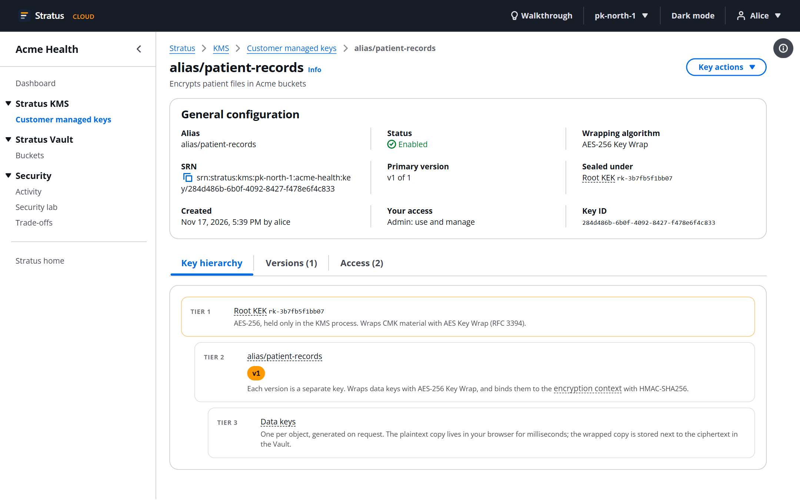
| Mechanism | Detail |
|---|---|
| Tenant isolation | Every key and bucket belongs to one tenant, and every query is filtered by the caller's tenant from the signed token. Keys of other tenants return AccessDeniedException. |
| Per-key ACL | user may encrypt and decrypt; admin may also rotate, disable, delete and grant. Grants are restricted to the same tenant. |
| Context policy | The encryption context must name the caller's tenant, and the HMAC ties it to the blob. |
| Rotation safety | A per-key in-process lock, SELECT … FOR UPDATE on Postgres, and UNIQUE(cmk_id, version) with retry guarantee unique, gap-free versions. |
| Consistent reads | GenerateDataKey reads the primary version and its sealed material in one transaction, so a blob always names a version that exists. |
| Throttling | Token bucket per user (200 burst, 100/s); 8 denials in 60 s give a 30 s lockout; 5 failed sign-ins give a 60 s lockout. |
scripts/loadtest.py fires 100 GenerateDataKey → Decrypt round trips from two Acme users on 24 threads. Mixed into the same queue are 25 attempts by Mallory (Globex) to unwrap a stolen Acme blob, and three key rotations landing mid-traffic. It asserts that every DEK round-trips unchanged, that rotations mint unique versions, and that no cross-tenant call succeeds.
Firing 100 round-trips + 25 cross-tenant attacks + 3 rotations on 24 workers... legitimate round-trips 100/100 ok in 2.00s (50.0/s) latency (gen+decrypt) p50 396.6 ms p95 508.8 ms rotations versions [2, 3, 4] key versions used [1, 2, 3, 4] cross-tenant attempts 25 blocked, 0 succeeded PASS
Measured locally against PostgreSQL 16 (two databases, two roles, as in production). The same test also passes on SQLite, and all 24 automated tests pass on both backends.
The same load test against the live deployment (Render free instances in Singapore, Neon Postgres, client in Islamabad) also passes:
legitimate round-trips 100/100 ok in 21.30s (4.7/s) latency (gen+decrypt) p50 4296.0 ms p95 5305.1 ms rotations versions [2, 3, 4] key versions used [1, 2, 3, 4] cross-tenant attempts 25 blocked, 0 succeeded PASS
Correctness and isolation hold under concurrency in production. Throughput is lower because each free instance has a fraction of a CPU and every request crosses the internet; 24 concurrent workers queue behind one small instance.
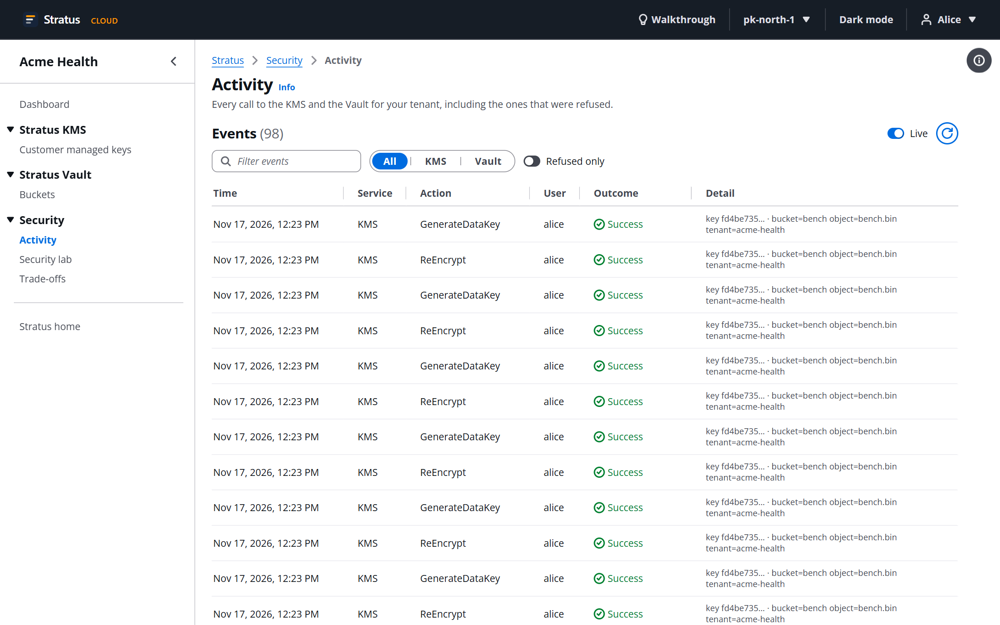
The console is built with Cloudscape, an open-source design system for cloud consoles. Abstract steps are made visible:
00.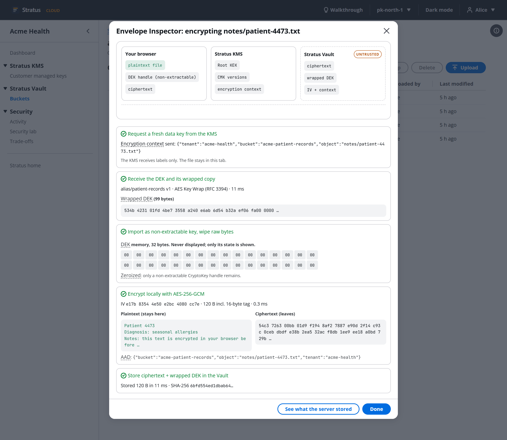
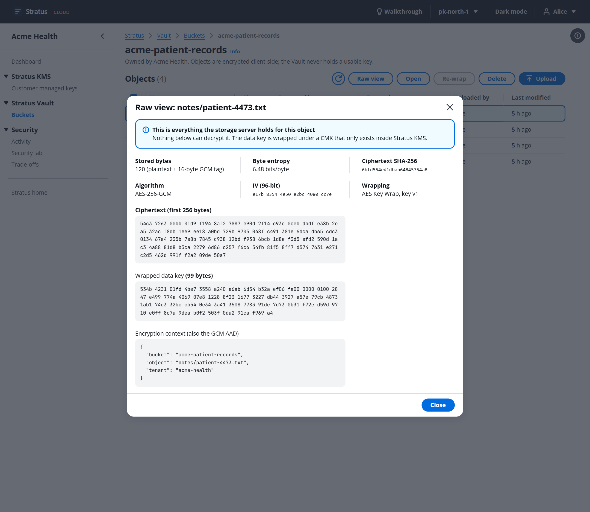
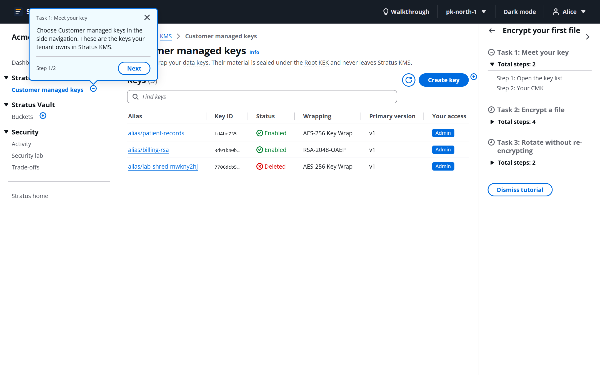
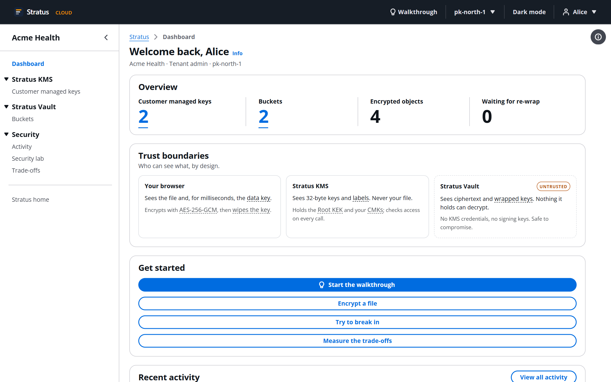
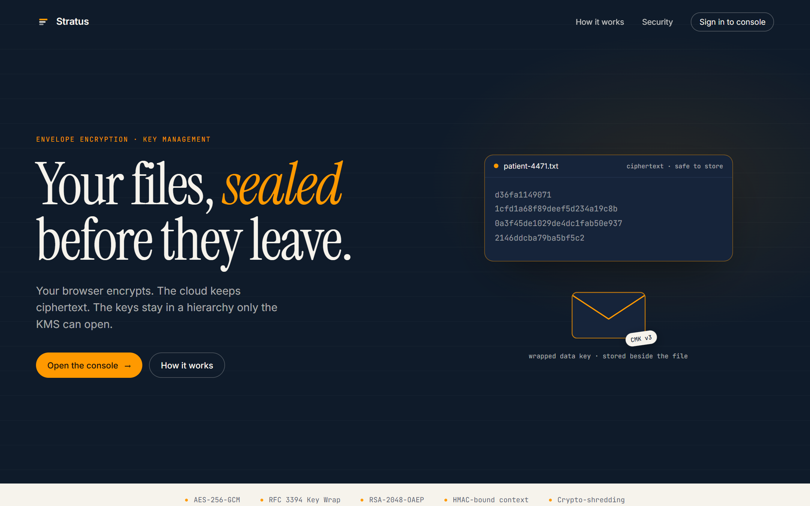
| Party | Assumption |
|---|---|
| User's browser | Trusted. Endpoint malware is out of scope. |
| Stratus KMS host | Trusted for keys and policy (the role an HSM plays in production). Host compromise is out of scope. |
| Stratus Vault | Untrusted: honest-but-curious or actively malicious. |
| Other tenants | Authenticated but malicious. |
| Network | Untrusted; TLS provided by the hosting platforms. |
| Adversary / attack | Mitigation | Evidence |
|---|---|---|
| Storage reads all data | Client-side AES-256-GCM; Vault holds no usable key | Lab 1, e2e test |
| Storage flips bits | GCM authentication tag over ciphertext, IV and AAD | Lab 3 |
| Storage swaps or replays objects | Context as GCM AAD and as HMAC inside the wrapped key | Lab 4 |
| Tenant reads another tenant | Tenant checks in Vault and KMS; per-key ACL | Lab 2 |
| Stolen wrapped keys | KMS ownership + ACL + context check; denials logged and counted | Lab 2 |
| Brute force / flood | Rate limit, denial lockout, login lockout | Lab 2, tests |
| Data in old backups | Crypto-shredding by CMK deletion | Lab 5 |
| Forged sessions by storage | Signing key only in the KMS (Ed25519) | Design |
| Threat | Control |
|---|---|
| Spoofing | Signed short-lived tokens, scrypt, sign-in lockout |
| Tampering | GCM tags, HMAC on wrapped keys, AES-KW integrity on sealed CMKs |
| Repudiation | Audit logs on both services, including refused calls |
| Information disclosure | Client-side encryption, tenant scoping, no secrets in logs |
| Denial of service | Rate limits, 10 MB object cap, bounded blob size |
| Elevation of privilege | Separate use and manage roles; no cross-tenant grants |
os.urandom, crypto.getRandomValues). A fresh DEK per object means a 96-bit random IV is never reused under one key.The Security Lab runs each attack live against the running services (shown here on the local Postgres deployment; all five also stop the attack on the live deployment), using the demo personas, and then explains the defence. Temporary objects and keys are cleaned up afterwards.
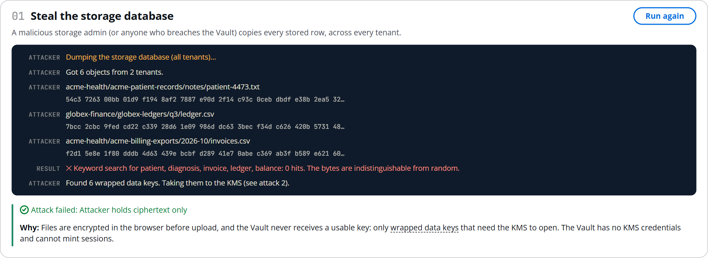
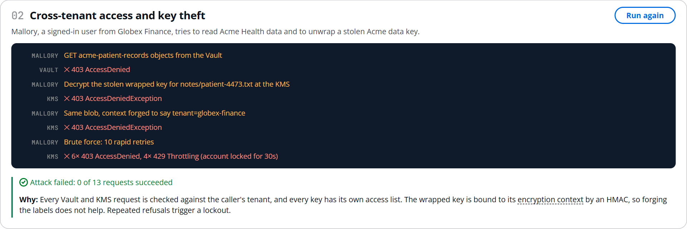
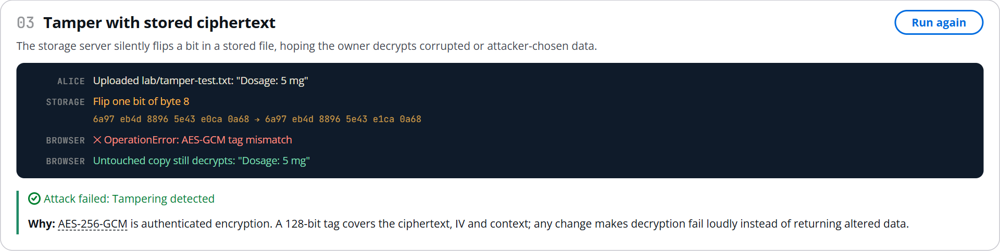
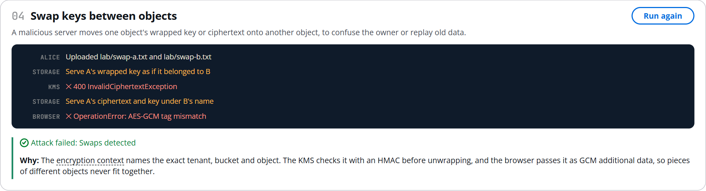
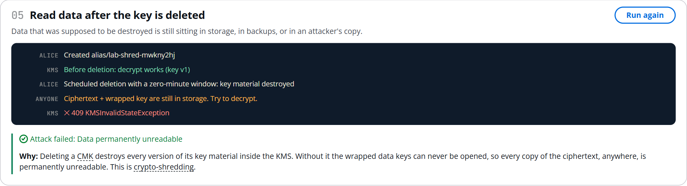
The Trade-offs page benchmarks the running system from the browser. Results from one run (Edge, laptop, local services on PostgreSQL; server times include the audit-log commit):
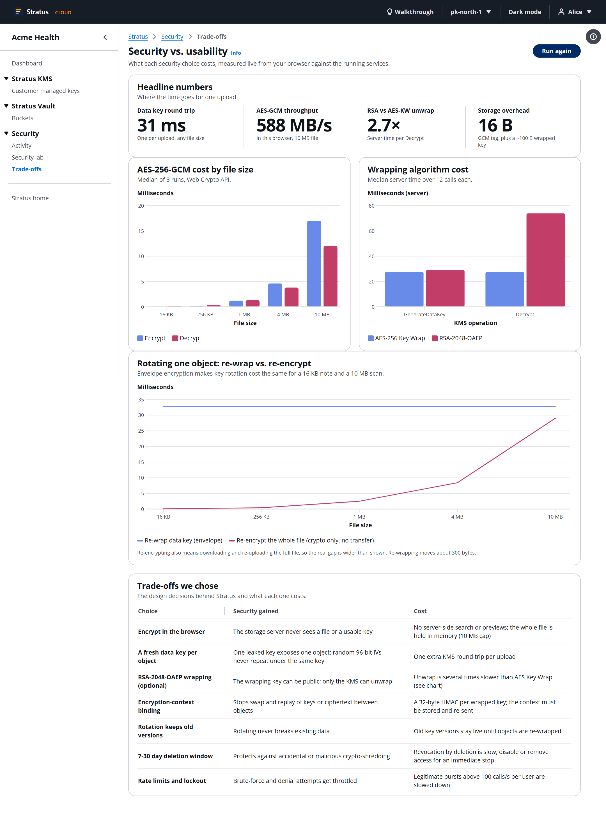
| Choice | Security gained | Cost |
|---|---|---|
| Encrypt in the browser | Storage never sees data or keys | No server-side search or previews; whole file in memory (10 MB cap) |
| Fresh DEK per object | Small blast radius; no IV reuse | One KMS round trip per upload |
| RSA-OAEP wrapping | Public-key wrapping possible | Decrypt ≈2.7× slower than AES-KW end to end on the server |
| Context binding | Stops swap and replay | 32-byte HMAC per blob; context must be stored |
| Envelope rotation | Rotate without downtime | Old versions stay live until re-wrapped |
| Deletion waiting window | Prevents accidental shredding | Slow revocation; use disable or access removal for an immediate stop |
| Rate limits and lockout | Throttle brute force | Legitimate bursts above 100/s are slowed |
The key result is the rotation chart. With envelope encryption, rotating a 10 MB object costs one ~300-byte KMS call, the same as for a 16 KB object (about 33 ms in our run). Re-encrypting the payload grows with file size, and also needs a full download and re-upload.
| Problem | What happened and how we fixed it |
|---|---|
| AES Key Wrap has no associated data | A wrapped DEK on its own could be replayed against a different object. We added an HMAC over the blob and the canonical encryption context with an HKDF-separated key, and reused the same context as the GCM AAD. |
| Connection-pool deadlock under load | The first load test produced HTTP 500s and 30 s stalls. Each request held one DB connection while the audit logger opened a second; with 24 concurrent threads the pool ran dry and requests waited on each other. Audit writes now reuse the request's connection. |
| Reported version after concurrent rotations | Four parallel rotations created versions 2–5 correctly, but the API reported the current primary, which another request had already advanced. Rotation now returns the version it minted. The concurrency test caught this. |
| Canonical context across languages | The HMAC and AAD require byte-identical JSON in Python and JavaScript. Both sides sort keys and use compact separators; the end-to-end tests cross the boundary in both directions. |
| Zeroization in managed runtimes | Immutable strings and GC copies make perfect wiping impossible. We restricted secrets to mutable buffers and non-extractable keys, wiped in finally blocks, and documented the residual risk. |
| A 2.5 s latency tail | The load test showed p95 ≈ 2.5 s while server-side time stayed under 100 ms. Measuring both sides showed the delay was on the client: Windows tried IPv6 ::1 for localhost before falling back to 127.0.0.1. With 127.0.0.1 the p95 fell to 0.5 s and throughput rose from 18 to 50 round trips per second. |
| Free-tier hosting | Ephemeral disks would wipe SQLite, and a regenerated Root KEK would shred all data. We moved to managed Postgres, put the Root KEK in a persistent secret, and added a warm-up script for cold starts. |
| Group | Covers |
|---|---|
| Crypto unit tests (8) | RFC 3394 §4.1 and §4.6 vectors, zeroize, AES-KW and RSA round trips, context-swap rejection, tampered blob, wrong Root KEK |
| KMS API tests (11) | Password login and lockout, envelope round trip, both algorithms, cross-tenant denial, context mismatch, rotation and ReEncrypt, revoke/disable/shred, role separation, 40 concurrent data keys with 4 concurrent rotations, audit scoping |
| End-to-end tests (5) | Storage sees only ciphertext, RSA objects, cross-tenant blocked at both services, tamper and swap detection, rotate + re-wrap keeps ciphertext hash |
Stratus KMS and Stratus Vault are deployed as two Render web services from render.yaml, each with its own Neon Postgres database and role. The console is deployed on Vercel. Secrets are set per service in the hosting dashboards and are never committed. CORS is limited to the console origin.
| Component | URL |
|---|---|
| Console (Vercel) | https://stratus-cloud-one.vercel.app |
| Stratus KMS (Render, Singapore) | https://stratus-kms.onrender.com/docs |
| Stratus Vault (Render, Singapore) | https://stratus-vault.onrender.com/docs |
| Source code | https://github.com/saimcyber/stratus-cloud |
The production databases were created by scripts/setup_postgres.py: two plain login roles (not members of Neon's admin role) with CONNECT revoked from PUBLIC. The script verifies that vault_app cannot connect to the kms database and vice versa before it writes any secrets. On the live system, sign-in, upload through the Envelope Inspector, all five Security Lab attacks and the load test were verified end to end.
GetPublicKey so clients wrap DEKs fully offline.